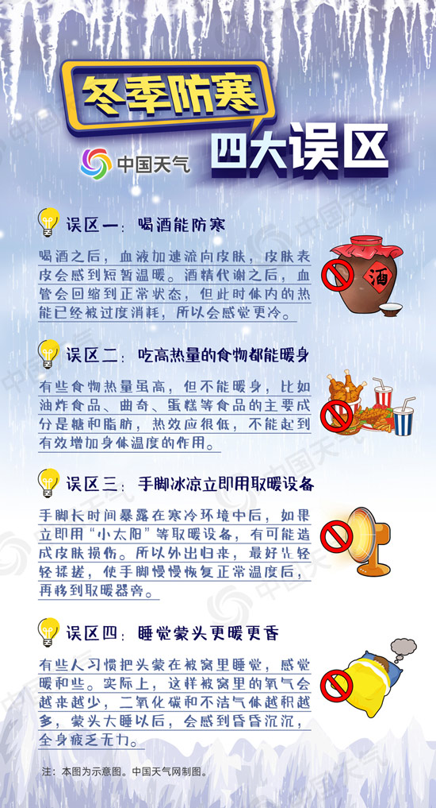

中国天气网讯 目前，今冬来最冷寒潮正在横扫我国。它实力强、降温猛、影响广，有足够的实力冻哭你。寒潮影响下，东北泼水成冰，京津冀冷如冰箱，连江浙沪都要感受零度的暴击。中国天气网推出全国冻哭预警地图，预计未来五天（24日至28日），八成国土将被冻透，冻哭线将南压至华南北部，27个省市区陆续刷新下半年来的最低气温纪录。
中国天气网气象分析师王伟跃介绍，这次寒潮实力非常强劲，带来的降温十分猛烈，未来五天，我国中东部大部将陆续度过今年下半年来最冷天。25日前后，北方地区的气温将达到本次过程的最低值；随后寒潮将跨过长江，给南方带来大幅降温，27日前后，江南南部、华南北部气温将触底。
从中国天气网推出全国冻哭预警地图上可以看出，随着寒潮南下，冻哭线也不断南压，24日位于长江中下游一线，25日南压到湖南南部、贵州南部一线，26日将压至华南北部一带，届时我国八成国土都将被冻透。
其中，24日，寒潮主要影响长江以北地区，江苏北部、湖北、安徽、河南、陕西、山东等地最高气温将在个位数，进入“冻哭区域”，届时寒冷入骨，劝君穿着秋裤走，寒潮来袭不会抖；再往北的北京、天津、河北、山西、甘肃等地开启“日夜冰冻”模式，全天气温都将在冰点之下，好在室内有暖气护体，但出门务必厚款羽绒服加身，否则有“冻傻”的风险；内蒙古、辽宁、吉林等地的小伙伴将体会由外到内彻骨的寒冷，出门不“捂装”，当心被冻僵；黑龙江更是冻到发紫，进入“终极寒冷区”，如果要出门，记得有多厚穿多厚，以免被冻伤。
冬季抗寒大作战，人人都有小妙招，有“抱团”取暖的，有“候鸟迁徙式”取暖的，还有通过吃吃喝喝取暖的……但不是每个方法都是科学有效的。下面这些取暖的误区，小伙伴们要小心避开哟~
